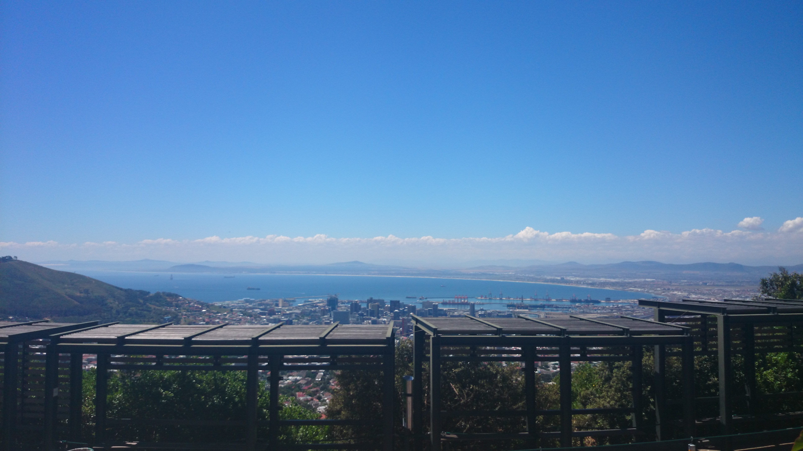
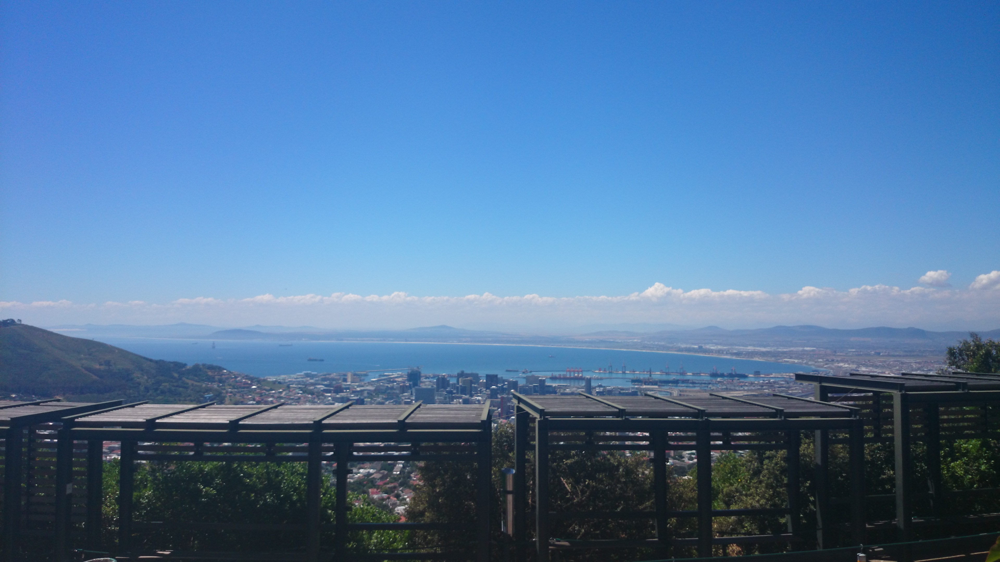
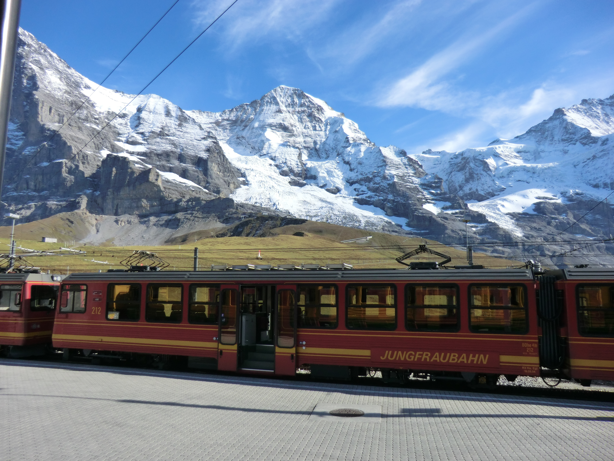
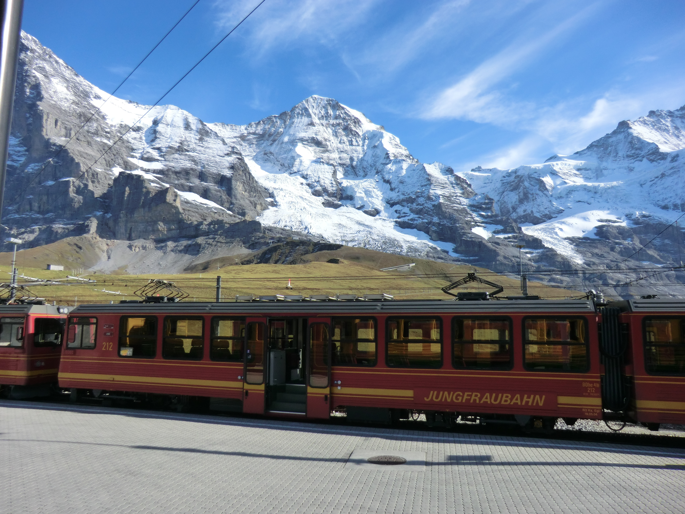
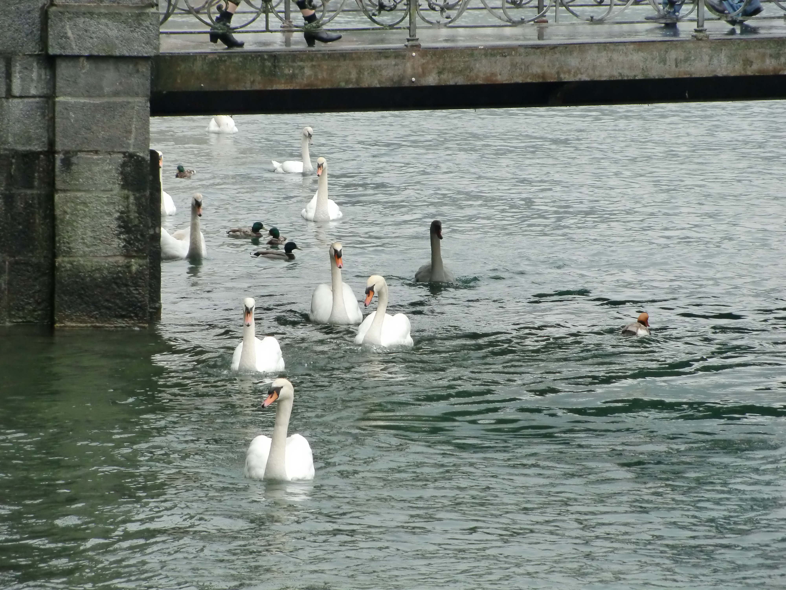
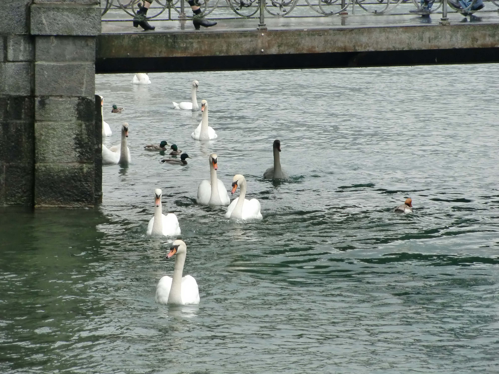
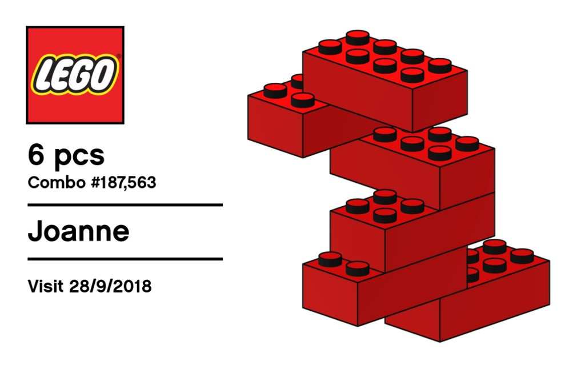
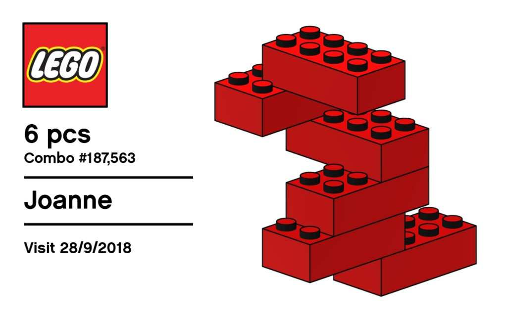

PHOTOLIO
Traveller's Journal


 

 



 


 



About
I am from Singapore. The first country I stepped out was Genting Highlands, Malaysia using coach. My first flight was to Koh Samui, Thailand. And I didn't stop there. I went to Hong Kong, Taiwan, Japan, China, Sweden, Switzerland, Italy, Canada, United States, South Africa, Austria, Germany, Denmark, Netherlands.
I was fortunate. Usually I would travel with packaged tours. Some of them were my work trips. The first DIY trip was during the 2nd Switzerland visit. English is my first language and Mandarin is my second. So I didn't have much communication problems when I travel. Moreover there is lots of Apps that can help with language translation. And I will always have my GPS too. I seldom drive but I do have my driving license.
I have been to Switzerland three times. And it will always be the country that I love to go. Fresh air, clean water and nature places to explore. A country with people that speaks 4 languages. Awesome!
Insight Vacations Tour is amazing. I will never forget my experience with this tour.
We liked Chan Brothers too. Went on few trips with them including the South Africa and Victoria Falls. They have amazing tour guides that followed us everywhere.
Avalon River Cruise is Awesome. I liked the personalised service onboard. Not forgetting the daily tours.